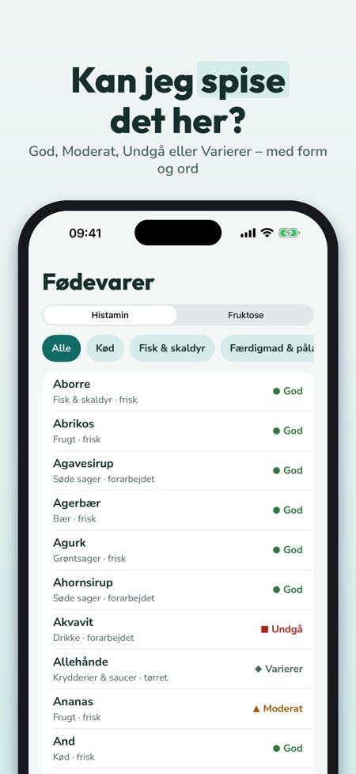
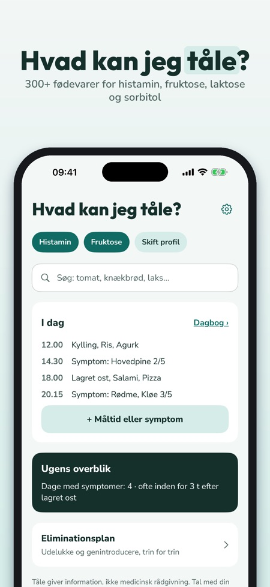
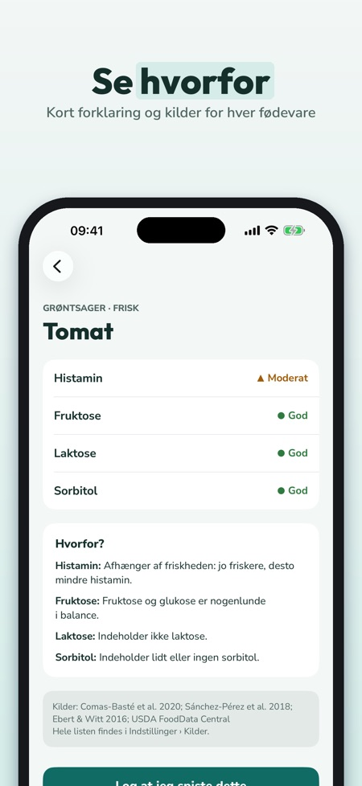

Madliste og maddagbog. Kan jeg spise det her? 300+ fødevarer vurderet for histamin, fruktose, laktose og sorbitol – på dansk, med nordisk mad, kilder og en dagbog for måltider og symptomer.



Kan jeg spise det her? Tåle giver svaret på dansk – for histamin, fruktose, laktose og sorbitol.
Ingen konto – alt gemmes på telefonen. Fruktose, laktose og sorbitol hører til FODMAP-grupperne; Tåle viser ingen portionsværdier.
MADLISTE MED 300+ FØDEVARER
• Nordisk mad: rugbrød, knækbrød, marineret sild, gravad laks, kærnemælk, tyttebær, kålroe, lakrids og meget mere
• Vurdering pr. intolerans: God, Moderat, Undgå eller Varierer – med farve, form og ord
• Hvorfor? Kort forklaring, f.eks. lagret, fermenteret eller mere fruktose end glukose
• Kilder til hver fødevare; hvor kilderne er uenige, står der »Varierer«
MIN PROFIL OG SØGNING
• Vælg dine intoleranser – listen og søgningen viser det, der gælder dig
• Søg med hverdagsord og synonymer
MINE SIKRE
• Gem det, du kan tåle, og det, du undgår
• »Vis i butik«: stor liste, du kan vise tjeneren eller tage med i butikken
DAGBOG
• Notér måltider fra listen eller frit, og symptomer med styrke 1–5
• Ugens overblik: symptomer pr. dag og hvad du oftest spiste inden for 3 timer før – en beskrivelse af dine noter, ingen diagnose
ELIMINATIONSPLAN
• Udelukke, genintroducere, egen liste – faser du planlægger med din læge eller diætist
• Log for genintroduktion
30 EGNE OPSKRIFTER
• Nordiske hverdagsretter, filtreret efter din profil
PDF TIL LÆGE ELLER DIÆTIST
• Dagbog, sikre lister og log som PDF via delingsmenuen
TÅLE PLUS
Uden køb: én intolerans, søgning, 50 fødevarer med alle detaljer og 7 dages dagbog. Tåle Plus åbner alle intoleranser, hele listen, ubegrænset dagbog, ugeoverblik, eliminationsplan, opskrifter og PDF. Vælg årligt (de første 7 dage uden betaling for nye abonnenter, fornyes derefter automatisk, opsig når som helst i App Store-indstillingerne) eller livstid (engangskøb).
VIGTIGT
Tåle er en informationsapp og ikke medicinsk udstyr. Den stiller ingen diagnoser og erstatter ikke læge eller diætist. Vurderingerne er generel vejledning, og tolerance er individuel.
Dagbogen og listerne gemmes kun på din telefon. Ingen konto.